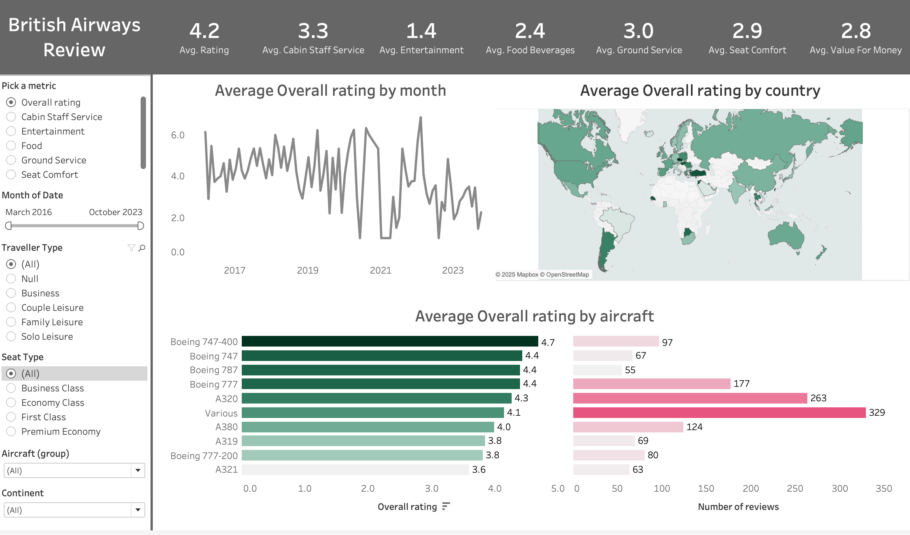
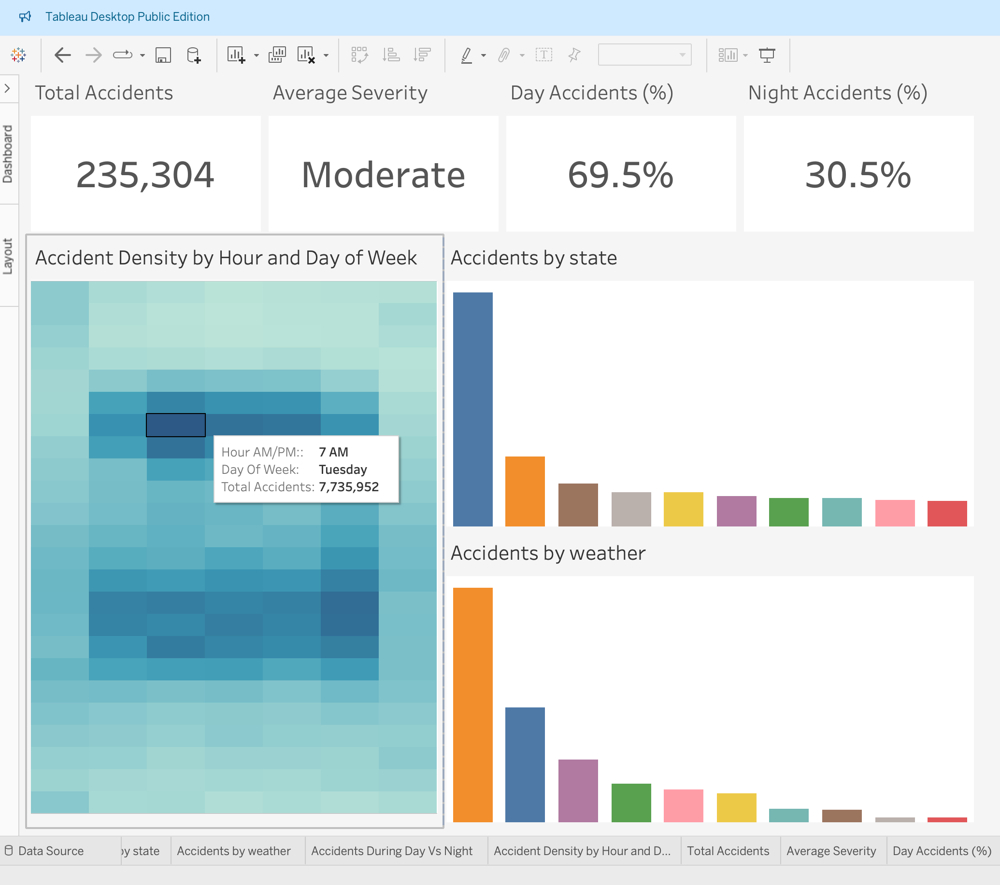
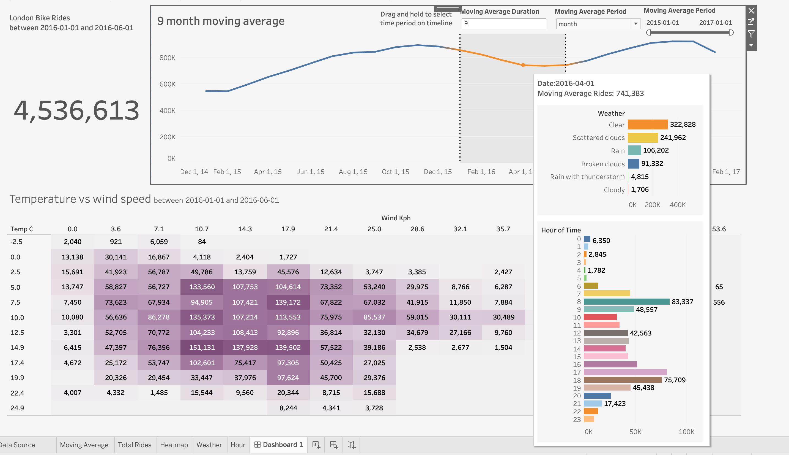
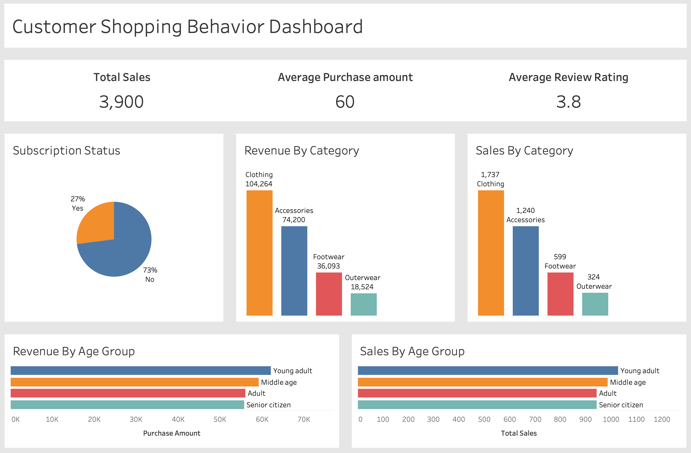

Query & analysis
Exploring datasets, answering business questions and identifying meaningful patterns.
Data Analyst · Windsor, Ontario
I use SQL, Python and business intelligence tools to uncover patterns, build reliable reporting, and communicate insights that people can act on.
-- Find the signal behind the numbers
SELECT
customer_segment,
SUM(revenue) AS total_revenue,
AVG(review_rating) AS avg_rating
FROM customer_behavior
GROUP BY customer_segment
ORDER BY total_revenue DESC;About
I am a Data Analyst who enjoys taking a question from raw data to a useful answer.
My work combines data cleaning, exploratory analysis, SQL, dashboard development and clear storytelling. I focus on building analyses that are technically sound and easy for non-technical stakeholders to understand.
I hold a Master of Applied Computing from the University of Windsor and continue strengthening my skills through hands-on projects involving business performance, customer behaviour and operations.
Start with the decision the analysis needs to support.
Validate, clean and document before drawing conclusions.
Communicate the result with clarity and context.
Capabilities
I work across the analytics lifecycle, from preparing raw data to delivering dashboards and recommendations.
Exploring datasets, answering business questions and identifying meaningful patterns.
Cleaning, transforming and analyzing data through reproducible notebook workflows.
Designing dashboards that make trends, comparisons and key metrics easy to understand.
Structuring reliable analytical data through layered warehouse models, validation and reusable views.
Selected projects
Each project follows a complete analytical process: prepare the data, investigate the question, visualize the findings and communicate what matters.
Designed and implemented a layered data warehouse that integrates CRM and ERP source data and delivers business-ready analytical views.
Developed advanced analyses on a dimensional warehouse to explain sales trends, product performance and customer behaviour.

Built an interactive Tableau dashboard for exploring passenger satisfaction across rating metrics, countries, time periods and aircraft types.

Investigated accident severity, weather, visibility, commute-hour patterns and geographic differences using Python, BigQuery and Tableau.

Studied how weather, seasons, temperature and time affect bike demand using Python and an interactive Tableau dashboard.

Explored spending, customer segments, product preferences and subscription behaviour to support marketing and retention decisions.
More work
See notebooks, SQL scripts, dashboard files and supporting documentation across my repositories.
Contact
I am open to opportunities where I can use analytics to help teams understand performance, improve decisions and communicate insight clearly.